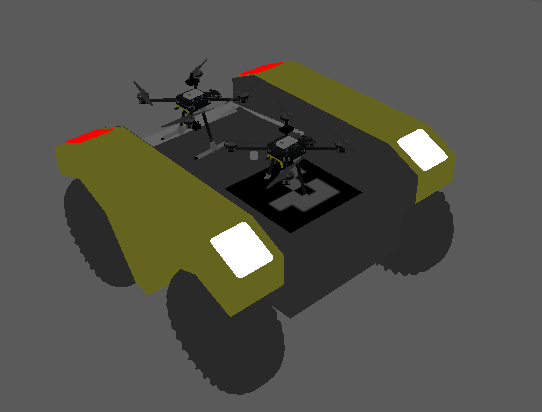

Curious builder focused on applied AI, cyber security, and autonomous engineering systems. Currently completing a master's thesis on tethered UAVs at KU Leuven.

Tethered UAV mounted on an autonomous UGV for extended-endurance, GPS-denied field operations.
Master in Industrial Engineering – CS
Specialisation in AI, control systems, and embedded software.
Bachelor in Information Technology
Focus on software development, networking, and IoT systems.
Ambient light guidance system that silently highlights required parts in industrial assembly — reducing operator errors without disrupting workflow.